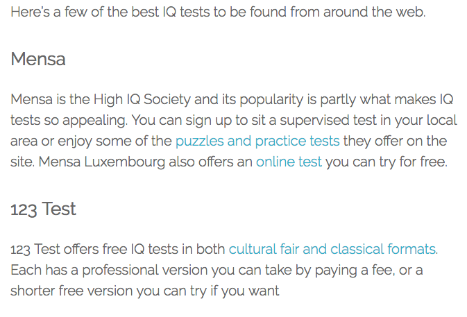

Probleem
In de site silversurfer.com is er een artikel met links naar externe pagina's...

... maar niet iedereen vindt zijn weg erin.

Test case
In de site silversurfer.com is er een artikel met links naar externe pagina's...
... maar niet iedereen vindt zijn weg erin.
In het artikel van Nielsen Norman Group "Seniors as Web Users" is er een verwijzing naar een heel voorkomende design issue: Clickability.
Omwille het gebrek aan tijd, zal ik hierover verder speculeren.
Here’s a few of the best IQ tests to be found from around the web.
Mensa is the High IQ Society and its popularity is partly what makes IQ tests so appealing. You can sign up to sit a supervised test in your local area or enjoy some of the puzzles and practice tests they offer on the site. Mensa Luxembourg also offers an online test you can try for free.
123 Test offers free IQ tests in both cultural fair and classical formats . Each has a professional version you can take by paying a fee, or a shorter free version you can try if you want
Here’s a few of the best IQ tests to be found from around the web.
Mensa is the High IQ Society and its popularity is partly what makes IQ tests so appealing. You can sign up to sit a supervised test in your local area or enjoy some of the puzzles and practice tests they offer on the site. Mensa Luxembourg also offers an online test you can try for free.
123 Test offers free IQ tests in both cultural fair and classical formats . Each has a professional version you can take by paying a fee, or a shorter free version you can try if you want